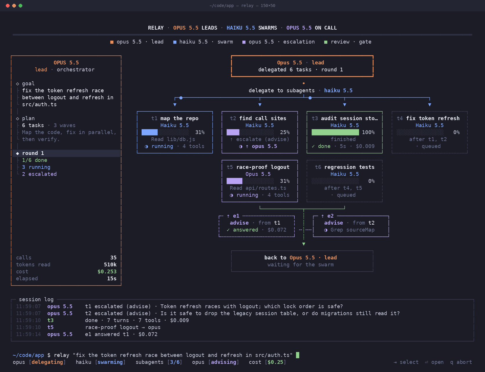
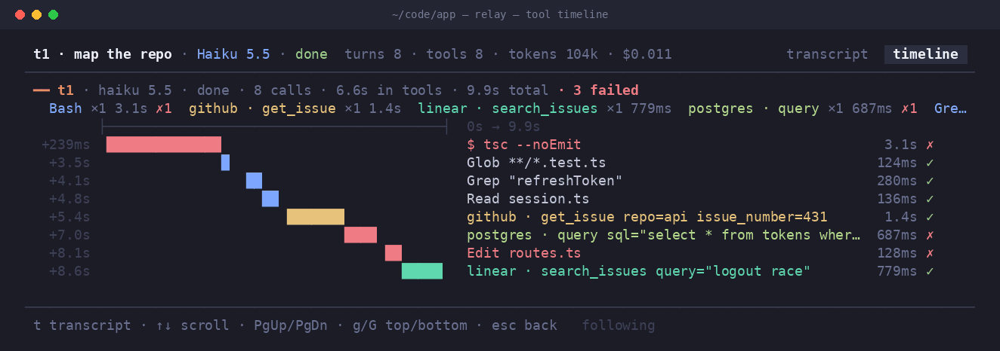

RELAY · OPUS LEADS · HAIKU SWARMS · OPUS ON CALL
Run Claude Code as a team, not a single agent.
relay is a multi-agent harness for the claude CLI. An Opus lead splits your goal into tasks, cheaper Haiku workers run them in parallel, and any worker that gets stuck can hand the problem up to Opus. You watch all of it live in a full-screen terminal UI.
$ git clone https://github.com/sm0ke21/relay.git && cd relay && npm install -g .

relay --mock)How it works
Opus plans, Haiku does the work, and Opus helps when a worker is stuck
Every agent is a real claude -p process. The expensive model only runs where it's needed: planning, reviewing, and the hard problems a worker escalates to it.
Opus leads
Reads the repo with read-only tools and splits the goal into self-contained tasks, with dependencies so two workers never edit the same file at once.
Haiku workers
Run the tasks in parallel, in dependency order (4 at once by default). Each one gets the results of the tasks it depends on.
Opus on call
Every worker has an escalate_to_opus tool. advise returns guidance the worker applies; delegate has Opus do that piece itself.
Verify, then repeat
Opus checks the results against the goal. It either passes the run or plans another round of follow-up tasks (3 rounds at most by default).
Features
Built for runs you leave unattended
Live TUI
Shows the plan, each worker's progress and current tool call, escalations, cost and tokens. Press enter on any agent for its full transcript, or t for its tool timeline.
Detachable sessions
Every run lives in a background session. Detach, close the laptop, and relay attach later.
A report for every run
.relay/runs/<time>/ holds a markdown report, a JSON summary and the raw output of every agent.
Spending limits
--budget stops starting new work once total spend passes the amount you set, and caps each agent too. You can also limit parallel workers, rounds, tasks and escalations.
Safe by default
Workers can edit files, but shell commands are blocked unless you allow them, e.g. --allow "Bash(npm test:*)".
Zero dependencies
Plain Node.js, no build step. --mock simulates every agent so you can try the whole thing for free.
Tool calls
See every tool call, including MCP
Worker boxes show the call in progress. MCP calls are labelled server · tool key-args, for example github · create_issue title="Fix race", and each server gets its own colour. Open any agent and press t for its tool timeline: every call is a bar on the agent's clock, with its duration and ✓/✗, plus totals per tool, slowest first.

github, linear and postgres serversTry it with a real MCP server
The repo includes a small demo MCP server with made-up data. Its tools take different amounts of time and one always fails. --mcp-config gives workers the servers in a JSON file and allows their tools.
$ node examples/demo-mcp.js --config \ > /tmp/demo-mcp.json $ relay --mcp-config /tmp/demo-mcp.json \ "use the demo tools, then summarise"
Sessions
Detach and come back later
The TUI attaches to a session over a unix socket, the same way tmux works. Press d to detach and the agents keep working. Several terminals can watch one session, and relay attach <TAB> completes session ids in zsh and bash.
$ relay -d "big refactor" # start in the background $ relay ls # live + recent runs $ relay attach r-4f2a # pick up where you left off $ relay logs -f # follow the log as text $ relay kill --all
Get started
Running in two minutes
-
Requirements
Node.js 20 or newer, and the Claude Code CLI installed and logged in. relay starts every agent through it, so runs use your Claude account.
-
Install
Clone the repository and install the
relaycommand. You can also skip installing and runnode bin/relay.jsfrom the checkout. -
Try it for free
relay --mockruns the whole pipeline with simulated agents, so it uses no tokens. -
Run it on your project
From your project directory, describe the goal. Allow the shell commands workers may run:
Without an
--allowrule, workers can't run your tests.
$ git clone https://github.com/sm0ke21/relay.git $ cd relay && npm install -g . $ relay --mock # free demo $ cd ~/code/myproject $ relay --allow "Bash(npm test:*)" \ "fix the failing auth tests"
Check out the project
The README covers every flag, the escalation protocol and how the session server works. The source is under 3,000 lines of JavaScript with no dependencies.